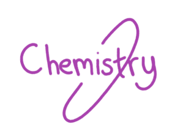
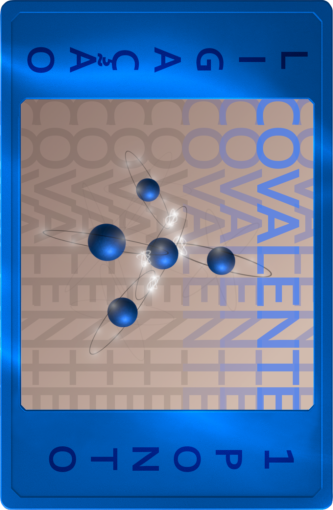

O Jogo de Cartas
Sobre o Jogo:
Chemistry é um jogo de cartas em turnos sobre química, cujo o objetivo é fazer mais pontos a partir de moléculas, o intuito do jogo é estimular os jogadores a aprenderem química de uma maneira simples e divertida.
Jogadores:
2
O baralho possui 132 cartas, sendo:
- 72 cartas de elementos;
- 33 cartas de ligação;
- 20cartas de multiplicação;
- 7 cartas de gases nobres.
Cartas
Chemistry é baseado em turnos, com X no total, o objetivo é juntar pontos a partir das cartas jogáveis:

Cartas de Elemento:
As cartas de elemento são a base do jogo, sua camada de valência são os pontos do jogo, são esses pontos que decidem o ganhador, aquele que tiver mais pontos após os 6 turnos. As cartas de elemento são separadas em metais e ametais.

Cartas de Ligação:
Cartas de ligação servem para fazer moléculas, sendo três os tipos de ligação, covalente, iônica e metálica, valendo respectivamente 1, 2 e 3 pontos a mais para a molécula, ou seja, pontos dos elementos + pontos da ligação, cada molécula deve ser feita com a ligação correta e devem ser usadas a quantidade certa de ligações na molécula, sendo necessário apenas para átomos diferentes no jogo.

Cartas de Multiplicação:
Cartas de Multiplicação São usadas para moléculas muito grandes, que precisam de muitos átomos para ser completa, porém, cartas de multiplicação não somam pontos, apenas ajudam o jogador a conseguir átomos suficientes para a molécula. As cartas de multiplicação estão disponiveis em 2x, 3x e 4x.
Cartas Especiais
No jogo, nos temos 7 cartas especiais ao total, sendo todas elas identificadas como gases nobres, todas são únicas e possuem habilidades únicas no jogo, essas habilidades podem ser tanto passivas quanto ativas.
no exemplo, as cartas são roxas e possuem sua habilidade escrito na parte inferior, normalmente as cartas são passivas, mas em casos a parte, as cartas dirão suas condições
-Regras do jogo-
Início do Jogo:
Antes do jogo de fato começar, os jogadores devem escolher de um modo de sua preferência para escolher quem iniciará o jogo, esse deverá ser o primeiro a escolher sua Carta Especial, e logo depois o outro jogador.
logo apos isso, as cartas de ligação deveram ser separadas do restante(todas possuem o verso escrito "ligações"), e logo depois, os montes devem ser embaralhados um por um, e assim, cada jogador deverá encher sua mão com o máximo de cartas [5], pega 3 cartas padrões e 2 cartas de ligações, exceto no caso do jogador possuir o argônio, dai então o jogo começa.
Turnos:
O jogo é baseado em turnos, onde em cada turno o jogador terá três energias, no qual são gastas com interações do jogo, veja a tabela:
| Interação |
Custo |
| Jogar carta avulsa |
1 energia |
| Jogar uma carta em uma molécula |
Nenhuma energia |
| Comprar uma carta de elemento |
1 energia |
| Comprar uma carta de ligação |
2 energias |
| Descartar uma carta |
1 energia |
| Usar Carta Especial |
*Variável |
Jogando:
Quando o jogo começar, os jogadores jogarão na ordem da seleção das cartas, fazendo alguma(s) das interações descritas acima, assim que o turno do primeiro jogador acabar, o próximo joga, lembre-se de criar uma estratégia usada nos tipos das cartas usadas e das sua carta especial.
Apenas as Moléculas com 2 ou mais elementos contarão pontos, cartas jogadas avulsas e na mão dos jogadores não somarão pontos no final.
Cartas avulsas no final do jogo diminuirão seus pontos em 1 por cada carta em mão.
Ao final do jogo, vence aquele cuja soma dos pontos for a maior.